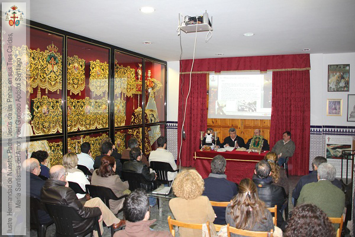

Historia y devoción
La Hermandad de las Tres Caídas se funda en 1958 en el barrio del Polvorín de Huelva, fruto de la piedad popular de los vecinos. Desde entonces, cada Sábado Santo realiza su estación de penitencia hasta la Santa Iglesia Catedral.
En 1980 se bendice la actual imagen del Santísimo Cristo de las Tres Caídas, obra del imaginero onubense Antonio León Ortega. La María Santísima del Amor es tallada por Manuel Guzmán Bejarano en 1995.
La hermandad tiene su sede canónica en la Parroquia del Sagrado Corazón de Jesús (C/ Presbítero Pablo Rodríguez) y su casa hermandad en la calle Puebla de Guzmán, corazón del Polvorín.

Parroquia del Sagrado Corazón de Jesús, Huelva

Casa Hermandad: punto de encuentro
En nuestra casa de hermandad (C/ Puebla de Guzmán) realizamos talleres, convivencias, comedor social y actividades para jóvenes. Es el alma del barrio del Polvorín.